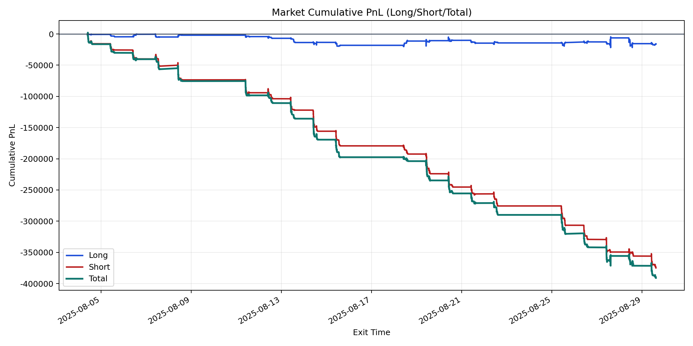
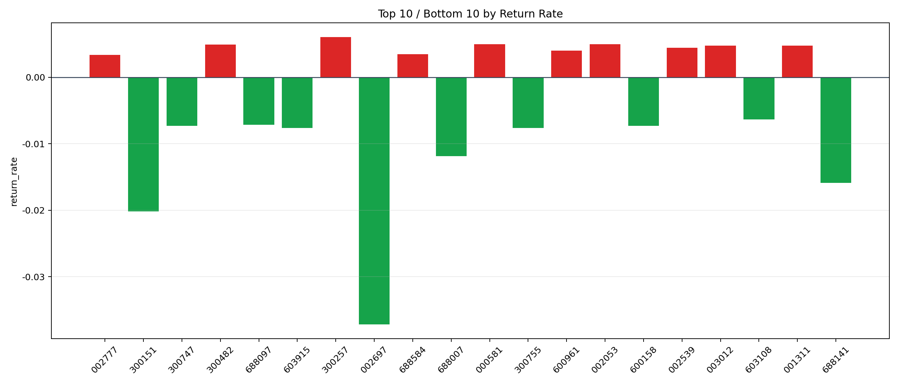

| repo_root | /home/haoranyou/data/output/dynamic_AUM_TAKER_index1000 |
|---|---|
| period_months | 1 |
| period_label | 2025-08-04_to_2025-08-29 |
| start_time | 2025-08-04 09:47:13 |
| end_time | 2025-08-29 14:45:37 |
| n_trades | 20373 |
| n_symbols | 339 |
| total_pnl | -390942.0312500025 |
| long_total_pnl | -16047.243249998164 |
| short_total_pnl | -374894.78800000437 |
| total_entry_notional | 365256052.0 |
| long_entry_notional | 106549049.00000001 |
| short_entry_notional | 258707003.00000003 |
| total_return_rate | -0.0010703232132892968 |
| long_return_rate | -0.0001506089768102779 |
| short_return_rate | -0.001449109547297428 |
| top_symbols_by_return | ["300257", "002053", "000581", "300482", "001311", "003012", "002539", "600961", "688584", "002777"] |
| bottom_symbols_by_return | ["002697", "300151", "688141", "688007", "603915", "300755", "600158", "300747", "688097", "603108"] |

